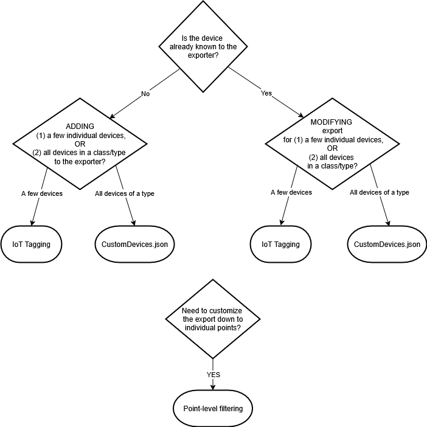

Device Export Strategy
The Building X Connector uses an exporter to translate a Desigo CC device (and its properties) into one or more points in Building X. Because Building X implements its own point model, a strategy for translating Desigo CC device properties into Building X points must be chosen. The export strategy affects which points are represented in Building X.
The table below lists some of the most commonly exported devices, and the Building X Connector comes with built-in export strategies with sensible defaults for these devices (right-hand column). But because other point export decisions are possible (and in some cases necessary), the following sections discuss how to customize the exporter.
Device Type | Building X Data Point Export Strategy |
BACnet devices | |
APOGEE BACnet FLN Device (including DXR) | If there is a function assigned, take its DL2 properties. If there is no function, create one exported point per object model DL2 property. |
Desigo PX controller | Create one exported point per descendant. If it is an application modeling datapoint type, take the function DL2 properties; otherwise, take only the default property. |
APOGEE BACnet primary controller | Create one exported point per descendant, using the default property (preferring function if available). |
DXR2 imported in full TRA/DRA mode | Create one exported point per descendant. If it is an application modeling datapoint type, take the function DL2 properties; otherwise, take only the default property. |
Desigo PXC Controller (TRA/NGA) | Create one exported point per descendant. If it is an application modeling datapoint type, take the function DL2 properties; otherwise, take only the default property. |
Desigo PXC.A (NGAA) Controller | Create one exported point per descendant, using the default property (preferring function if available). |
FS20 Fire Panel | Export only detection and control subtrees. For each datapoint, if there is a function assigned, take its function DL2 properties. If there is no function, create one exported point per object model DL2 property. |
non-BACnet devices | |
APOGEE P2 primary controller | Create one exported point per descendant, using the default property (preferring function if available). |
APOGEE P2 FLN Device | If there is a function assigned, take its DL2 properties. If there is no function, create one exported point per object model DL2 property. |
Siclimat Controller | Create one exported point per descendant, using the default property (preferring function if available). |
Modbus Controller | If there are descendants, use the default property (function or object model) for an exported point. If there are no descendants, use the DL2 properties (function or object model). |
XLS Fire Panel | Create one exported point per function DL2 property. |
Intrusion devices (Guarto 3000 and SPC) | Create one exported point per descendant, using the default property (preferring function if available). |
S7 BA devices | Create one exported point per descendant, using the default property (preferring function if available). |
GMS Main Server Station | Create one exported point per object model DL2 property. |
Virtual objects (Application View) | Create one exported point per descendant, using the default property (preferring function if available). |
OPC DA2 device | If there is a function assigned, take its DL2 properties. If there is no function, create one exported point per object model DL2 property. |
Other1 | |
IoT-tagged device (e.g. SORIS leaf node) | If there is a function assigned, take its DL2 properties. If there is no function, create one exported point per object model DL2 property. |
IoT-tagged device (e.g. SORIS container node) | Create one exported point per descendant, using the default property (preferring function if available). |
You may decide that the default export strategies listed above are not adequate for your needs. For those cases, it is possible to customize the exporter. Keep in mind that a custom export solution will require additional maintenance and ongoing support. There are two likely reasons to export a custom set of points to Building X:
- Adding New Devices. You need to export points from one or more new devices that are not already recognized in the table above.
- Modifying the Export Strategy for Existing Devices. You need to export different points from one or more already-known devices than those allowed for by the default strategies listed in the table above.
Both situations use the same set of tools to change the default export behavior:
- IoT Device Tagging. When you want to change the export of one or a small number of devices, add the IoT device tag to each device in the Models and Functions Editor. Because this tag must be applied to each individual device, this method is recommended when the scope of the change is limited to a small number of devices.
- Custom configuration file. To modify an entire class of devices (device type), supply a JSON file (CustomDevices.json) with a defined list of parameters. This works best when the user needs to change or extend the exporter for many devices, or all devices of a given type.
- Point-level filtering. In certain cases ,you may need to change the exporter down to the level of specifying individual points. The point-level filter is another tag that can be supplied when you need this level of fine-grained control.
In general, each of these methods for changing the exporter requires you to (1) specify which devices are in the scope of the change, and (2) provide a new strategy for the export. Details for each method are discussed in the next section, “Tools for Customizing the Exporter.” The last section, “Custom Export Scenarios,” gives a general overview of the steps involved in adding new devices or customizing existing export strategies.
See the flow chart below for a summary of the custom export workflow:

Tools for Customizing the Exporter
IoT Device Tagging
Use Desigo CC object tagging to mark any single device (“device instance”) with the “IoT” tag. In the Models & Functions Editor, this takes the form:
“iotDevice=<tag>”
where <tag> is one of the export strategies contained in the table below (designated by the tag value in the left-hand column), or the default tag defined by Haystack (“m:”).
iotDevice tag value | Description |
|---|---|
Children_DefaultProperty | Travel down the hierarchy from the device and for each child, check for the assignment of a function. If there is a function, create an exported point for the default property of that function. If there is no function, create an exported point for the default property of the object model. |
Children_DefaultProperty_Appl_Modeling | Travel down the hierarchy from the device and for each child, check the data type of the child. If it is PX classic, DRA room control, or AX100 room control, create an exported point for each function DL2 property. If it is not one of those types, create an exported point for the object model default property. |
Children_Function_DL2_or_OM_DL2_Properties | Travel down the hierarchy from the device and for each child, check for the assignment of a function. If there is a function, create an exported point per function DL2 property. If there is no function, create an exported point per object model DL2 property. |
Children_Function_DL2_or_DefaultProperty | Travel down the hierarchy from the device and for each child, check for the assignment of a function. If there is a function, create an exported point per function DL2 property. If there is no function, create an exported point for the object model default property. |
ThisObject_OM_DL2_Properties | For the device, create an exported point per object model DL2 property. |
ThisObject_OM_DL3_Properties | For the device, create an exported point per object model DL3 property. |
ThisObject_Function_DL2_Properties | For the device, check for the assignment of a function. If there is a function, create an exported point per function DL2 property. If there is no function, do not create any exported points for this device. Because there are no points, the device will not be exported and will not appear in Building X. |
ThisObject_Function_DL2_or_OM_DL2_Properties | If there is an assigned function, create an exported point per function DL2 property of the device. If there is no function, create an exported point per object model DL2 property of the device. |
The IoT device tag can be applied to both (1) devices already known to the exporter and (2) new devices defined in the CustomDevices.json file.
For more information on tagging conventions, see Engineering Step-by-Step -> Objection Configuration -> Creating Tags for Objects.
Custom Devices JSON file
Adding or modifying the exporter for an entire class of devices (“device type”) requires that you compose a custom JSON configuration file,”CustomDevices.json,” with information on the device type whose export you want to change or modify. Details and examples of this file can be found in the README included with your installer.
As part of defining the device, you must select a point filtering strategy.
The point filter employed in CustomDevices.json lets the user select a predefined export strategy for use with a new device type.
Consult the README for more on how to configure the CustomDevices.json point filter.
Apply an IoT Point Filter to Change the Export Strategy
For the greatest possible level of customization to the exporter, add the IoT Point Filter tag to control the export down to the level of individual points.
In the Models & Functions Editor, the IoTPointFilter tag can be either (1) the name of an alternative export strategy (see table below) or (2) a list of properties.
If the user selects a point filter with a different export strategy, the tag takes the form
iotPointFilter=”<Export Strategy>”
For example:
iotPointFilter=OM_DEF_PROP
The user-selectable export strategies are a subset of the default strategies available for devices already known to the exporter:
iotDevice tag value | Description |
|---|---|
Children_DefaultProperty | Travel down the hierarchy from the device and for each child, check for the assignment of a function. If there is a function, create an exported point for the default property of that function. If there is no function, create an exported point for the default property of the object model. |
Children_DefaultProperty_Appl_Modeling | Travel down the hierarchy from the device and for each child, check the data type of the child. If it is PX classic, DRA room control, or AX100 room control, create an exported point for each function DL2 property. If it is not one of those types, create an exported point for the object model default property. |
Children_Function_DL2_or_OM_DL2_Properties | Travel down the hierarchy from the device and for each child, check for the assignment of a function. If there is a function, create an exported point per function DL2 property. If there is no function, create an exported point per object model DL2 property. |
Children_Function_DL2_or_DefaultProperty | Travel down the hierarchy from the device and for each child, check for the assignment of a function. If there is a function, create an exported point per function DL2 property. If there is no function, create an exported point for the object model default property. |
ThisObject_OM_DL2_Properties | For the device, create an exported point per object model DL2 property. |
ThisObject_OM_DL3_Properties | For the device, create an exported point per object model DL3 property. |
ThisObject_Function_DL2_Properties | For the device, check for the assignment of a function. If there is a function, create an exported point per function DL2 property. If there is no function, do not create any exported points for this device. Because there are no points, the device will not be exported and will not appear in Building X. |
ThisObject_Function_DL2_or_OM_DL2_Properties | If there is an assigned function, create an exported point per function DL2 property of the device. If there is no function, create an exported point per object model DL2 property of the device. |
If the point filter tag does not specify one of the strategies above, the exporter assumes that it should search for one or more properties on the device. These can be properties of the object or function, and will take the form:
iotPointFilter= “<ListOfProperties>”
For example:
iotPointFilter=Property1,Property2,Property3 (function property tagging)
or:
iotPointFilter=Property1,@Value1,@Value2,Property2 (mixed object and function property tagging)
All examples require a comma-separated list whose names can either specify an object model property (for example, “Present_Value”) or a function property (“@Value”). If none of the listed properties match those found on the device, the exporter will fall back to the export strategy FCN_OM_DEF_PROP (see the above table).
Background information about export strategies and the design of the exporter can also be found in the README related to custom devices that is bundled with your installer.
For more information on tagging conventions, see Engineering Step-by-Step -> Objection Configuration -> Creating Tags for Objects.
Custom Export Scenarios
Adding New Devices
A “new device” is any device that is not recognized by the exporter, and which does not have an export strategy already defined. After the correct information is supplied to the exporter, all specified devices will then be recognized and made eligible for export.
To add one or a small number of devices, it is generally recommended that you apply the “IoT” tag to those specific devices. When you want to add all the devices of a type to the exporter, use the CustomDevices.json file.
If you add a device that is already known to the exporter, conflict resolution rules will apply. In general, the system assumes that if you add a device to the exporter that is already known, you intend to modify the default export strategy--the custom rule will be chosen. If a conflict arises between a device type defined in the custom JSON file and specific device tagged with the IoT tag, the system generally defers to the more narrowly tailored rule (the IoT tag). The tag for that specific device would be retained for export.
Modifying the Export Strategy for Existing Devices
Consult this section if you are trying to export either a specific device (device instance) or a class of devices (device type) that are already recognized by the exporter and covered by a point export strategy--but you want to export different points than the default to Building X.
All modifications to the default export strategy require you to (1) define the devices being changed and (2) supply a new export strategy to the exporter.
As with adding new devices, the definition of the devices to be changed can be supplied either through (1) per-device IoT device tagging (2) the CustomDevice.json file to specify an entire class of devices.
For both IoT device tagging and the CustomDevice.json file, the user supplies an overall export strategy listed in one of the tables above. This may not be adequate for all cases. If you require export customization down to the level of individual points, use the IoT Point Filter tag (see above) to make these customizations.
Whenever you customize the exporter, it is possible that a conflict will arise between the default strategy and custom export rules. As with the rules for conflict resolution for new devices, in general the system assumes that customizations to specific devices should take precedence over broader rules.